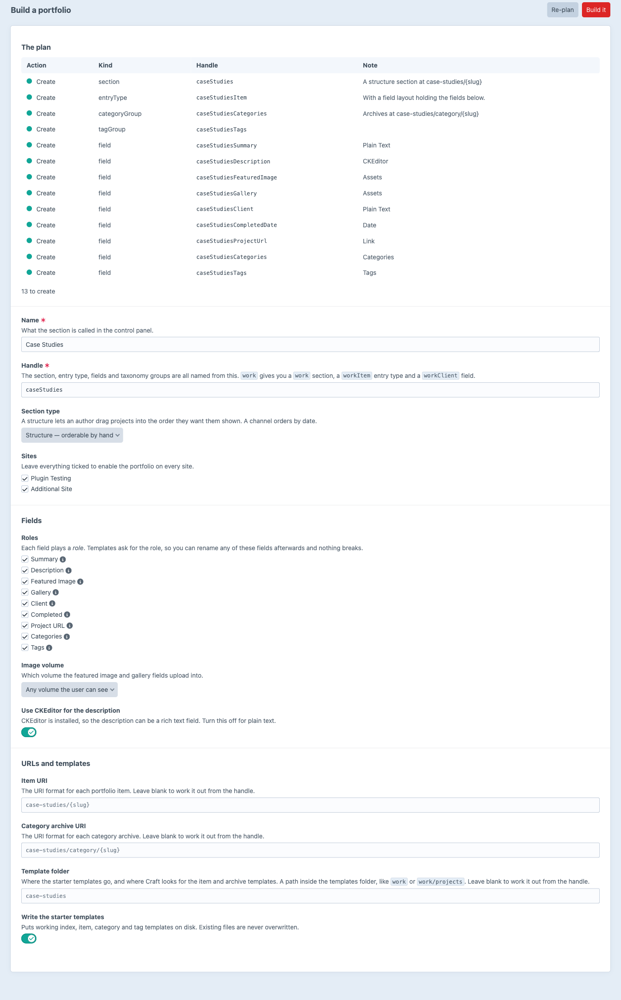

A portfolio's whole content model in one go — and templates that never need a field handle.
The section, entry type, nine fields and both taxonomies you would otherwise click together by hand.
Every item is create, reuse or conflict before a byte is written. A content model is not something you undo.
| Handle | Type | Outcome |
|---|---|---|
| portfolio | Section | create |
| portfolioCategories | Category group | create |
| portfolioSummary | Plain Text | reuse |
| portfolioGallery | Assets | create |
| portfolioClient | Plain Text | conflict |
portfolioClient is already a Dropdown. Rename it or choose another handle — it will not be reshaped.Templates ask for a role. The plugin looks the field up by UID at the moment it is asked.
portfolioClientclientName✓ still rendersGrid, masonry or list, a filter bar and a keyboard-accessible lightbox.
Name it, pick the roles, read the plan, build. Drift is reported when a field the map points at goes missing.
